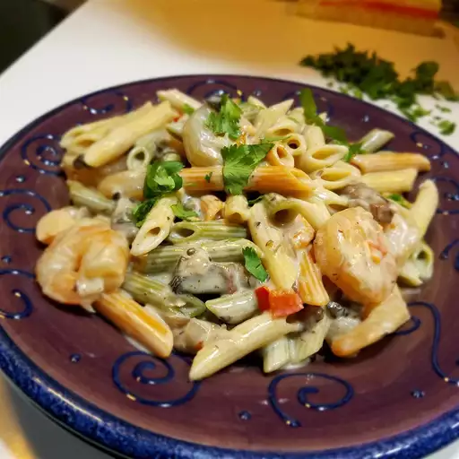

Home
Shrimp Alfredo Recipe

Description
Shrimp Alfredo pasta is a creamy and flavorful dish that combines succulent shrimp with a rich Alfredo sauce,
often enhanced with ingredients like portobello mushrooms and red peppers. The pasta is cooked to al dente
perfection and then tossed in a decadent sauce made from butter, olive oil, garlic, and cream. The shrimp are
sautéed until pink and firm, and the sauce is thickened with Romano cheese and seasoned with a dash of cayenne,
salt, and pepper. The result is a comforting and satisfying meal, perfect for those who love the combination of
seafood and creamy pasta.
Ingredients
- 12 ounces penne pasta
- 1/4 cup butter
- 2 tablespoons extra-virgin olive oil
- 1 onion, diced
- 2 cloves garlic, minced
- 1 red bell pepper, diced
- 1/2 pound portobello mushrooms, diced
- 1 pound medium shrimp, peeled and deveined
- 1 (15 ounce) jar Alfredo sauce
- 1/2 cup grated Romano cheese
- 1/2 cup cream
- 1 teaspoon cayenne pepper, personal preference
- Salt
- Pepper
- 1/4 chopped parsley
Steps
- Bring a large pot of lightly salted water to a boil. Add pasta and cook for 8 to 10 minutes or until al
dente; drain.
- Meanwhile, melt butter together with the olive oil in a saucepan over medium heat. Stir in onion, and cook
until softened and translucent, about 2 minutes. Stir in garlic, red pepper, and mushroom; cook over
medium-high heat until soft, about 2 minutes more.
- Stir in the shrimp, and cook until firm and pink, then pour in Alfredo sauce, Romano cheese, and cream;
bring to a simmer stirring constantly until thickened, about 5 minutes. Season with cayenne, salt, and pepper
to taste. Stir drained pasta into the sauce, and serve sprinkled with chopped parsley.